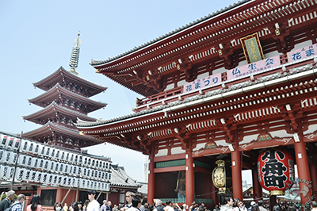
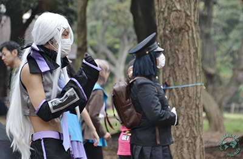
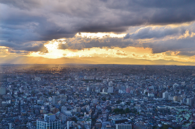

Tokio
Cuando nos planteamos qué ver y hacer en Tokio (東京) solemos asustarnos: la ciudad es tan enorme
y ofrece tanto que ver y hacer al turista que uno no sabe muy bien por dónde empezar.
Es una ventaja, porque es complicado que se nos acabe la ciudad, pero también un gran inconveniente porque
siempre nos vamos a dejar cosas pendientes. Aunque podemos convertir este inconveniente en ventaja:
¡así siempre tenemos excusa para volver! Y además, con una buena planificación, podremos ver una gran parte de Tokio.

Miluska: , Tokio es perfecta para visitar durante el día mercados, parques o templos y acabar la jornada paseando entre neones y carteles publicitarios en barrios como Akihabara, Shinjuku o Shibuya. Debes tener en cuenta que la mejor forma de desplazarte por Tokio es utilizando su eficaz y extensa red de metro, parecida a una gran ciudad subterránea, con la que podrás llegar a todas las atracciones turísticas y puntos importantes de la ciudad.
Perderse por el barrio de Asakusa, uno de los mejor conservados y más lindos de Tokio, es sin duda nuestro imprescindible más imprescindible. Aquí la atracción principal es el templo Senso-ji, con su enoooorme linterna de papel siempre rodeada de peregrinos y curiosos. Pero no solo de su templo vive Asakusa: aquí puedes pasear a la orilla del río Sumida, admirar el skyline desde la terraza del edificio del departamento de turismo (2-18-9 Kaminarimon, Taito, Tokyo), con el imponente Skytree, el edificio más alto de Tokio.
Tokio es la capital más friki del mundo, no puedes irte sin haber hecho alguna de sus frikadas: desde comer en restaurantes ninja, ir a mimar a un gatito en algún cat-café, ir a tomar una bebida caliente en un maid-café de Akihabara o, sin moverte de este barrio, perderte por los cientos de tiendecitas de merchandising de tus animes favoritos.
Por si no lo sabes los cosplayers son aquellos que se disfrazan de sus personajes favoritos de videojuegos, anime y manga. Hace un tiempo la meca donde se reunian era, sin duda alguna, Harajuku. Hoy parece que la moda se ha trasladado a la zona de Odaiba aunque oye, siempre merece la pena darse una vuelta por Harajuku: su callejuela Takeshita-dori, el templo Meiji Jingū y el parque Yoyogi son alguna de sus principales atracciones.
Si quieres neones, letreros, caos y mucha-mucha-muuuucha vida vete a pasar la noche a Shinjuku: aquí podrás toparte con el mismísimo Godzilla, tomar algo en un mini-restaurantito de la calle Golden-Gai o atreverte a descubrir el barrio rojo de Tokio, Kabukicho (si eres más de bailoteo te aconsejamos la zona de Rappongi, llena de club fashion!).
Buenas noticias: las mejores vistas de Tokio son gratis! Se obtienen subiendo a las torres del Metropolitan Government Building, en el barrio de Shinjuku. Al atardecer son absolutamente maravillosas y si tienes suerte… se puede ver hasta la silueta del Monte Fuji.
